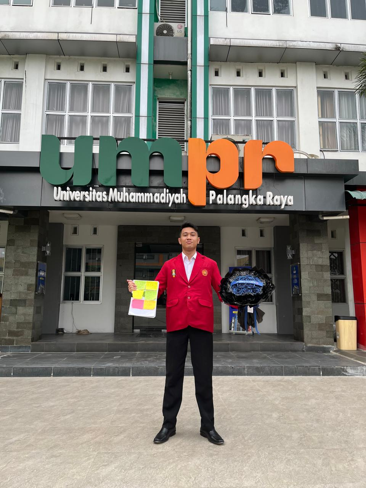

HALO, SELAMAT DATANG
Belajar hari ini, berkembang untuk masa depan.
Perkenalkan, saya Muhammad Yusuf Asdirizani, mahasiswa Ilmu Komputer yang memiliki ketertarikan pada dunia teknologi dan pengembangan sistem informasi.

TENTANG WEBSITE
Sebuah ruang untuk bertumbuh.
Website ini dibuat sebagai bagian dari tugas mata kuliah Komputasi Awan. Selain menjadi media pembelajaran, website ini juga menjadi tempat untuk menyimpan dokumentasi dan hasil pengerjaan tugas.
Melalui halaman ini, saya ingin mengenal lebih jauh perkembangan teknologi serta meningkatkan kemampuan dalam bidang teknologi informasi.
Mulai membaca materi ↗JELAJAHI WEBSITE
Apa yang bisa kamu temukan?
Beberapa informasi dan dokumentasi yang tersedia di dalam website ini.
PERSONAL MOTTO
"Terus belajar, terus berkembang, dan terus berinovasi."
Setiap proses adalah bagian dari perjalanan menuju masa depan yang lebih baik.